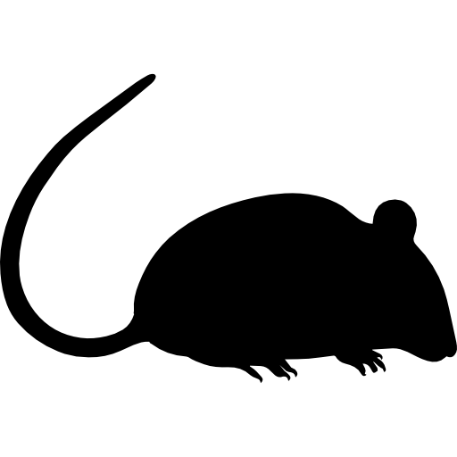

Leptospirose 
Tetano
Hepatite A
Dengue
Cólera 
Agente transmissor: Trata-se de uma doença adquirida pela exposição direta ou indireta à urina de animais (principalmente ratos) infectados pela bactéria Leptospira

Agente transmissor: trata-se de uma doença causada pela bactéria (clostridium tetani) que pode estar presente na pele, fezes, terra, galhos, plantas baixas, água suja e poeira.
Agente transmissor: trata-se de uma doença causada pelo vírus A (HAV) da hepatite. A transmissão ocorre é fecal-oral, ou seja, contato de fezes com a boca. Essa doença está associada com o consumo de alimentos não higienizados ou água insalubre, além de estar associada aos locais com baixa investimentos em saneamento básico e recorrente em pessoas de situação de rua.
Agente transmissor: trata-se de uma doença causada pelo vírus fêmea do mosquito Aedes aegypti (significa “odioso do Egito).
Agente transmissor: A cólera é causada pela ação da toxina liberada por dois sorogrupos específicos da bactéria Vibrio cholerae. Trata-se de uma doença bacteriana infecciosa intestinal aguda, transmitida por contaminação fecal-oral direta ou pela ingestão de água ou alimentos contaminados.